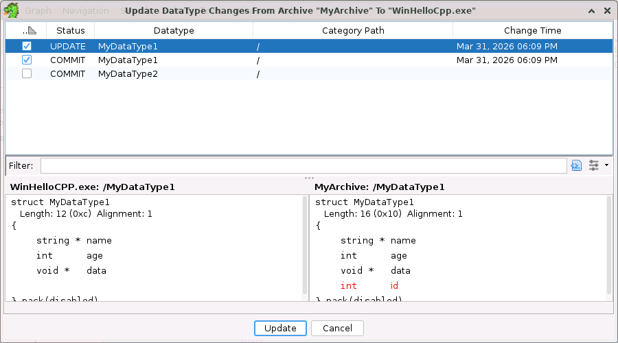
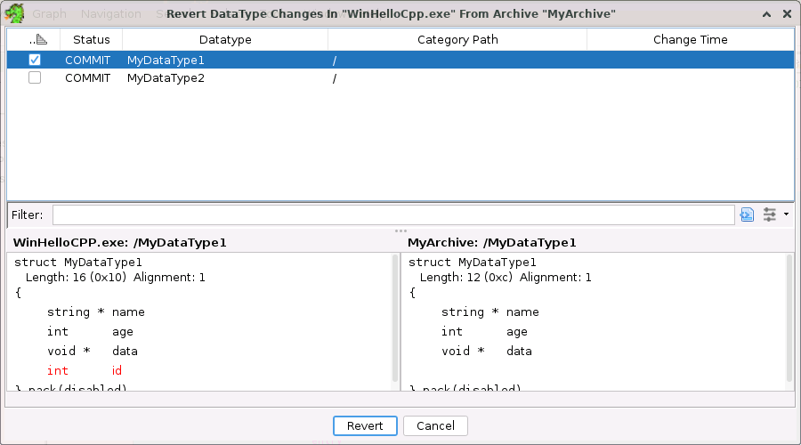
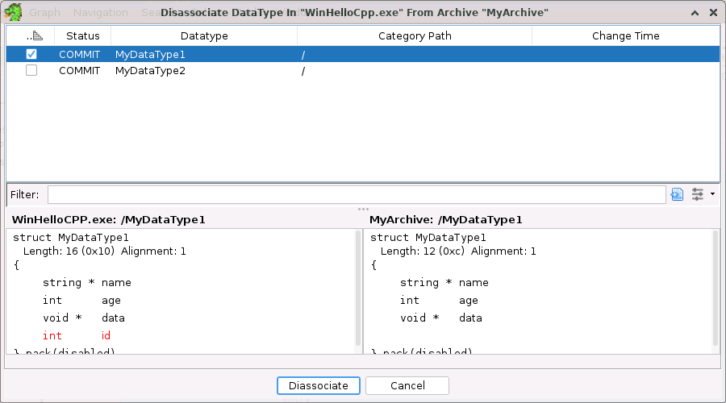

Updating Archives
You can arrive at the Update Data Types dialog from the Update Datatypes From action on an archive. The following dialog illustrates updating datatypes from a source archive named MyArchive to the program WinHello.CPP.exe.

The UpdateDataTypes dialog displays a table that lists all the data types that have been changed in the source archive. The table consists of the following columns:
Apply
The apply checkbox. Selecting the checkbox will mark the data type to be updated to the version of the data type in the source archive.
Status
Indicates the status of the data type.
UPDATE Data type was changed in the source archive, but not in the client program/archive. CONFLICT
Data type was changed both in the client program/archive and the source archive. Currently there is no merge, so if you select this data type to update, then all local changes will be discarded. Data Type
Displays the name of the data type as it is know in the local program/archive.
Category Path
Displays the full path and name of the data type in the local program/archive.
Change Time
Displays the time the data type was last changed in the source archive.
Below the table, a data type view panel shows the selected data type as it exists in the client program/archive and source archive. Differences are highlighted in red. Once all data types to be updated have been selected, press the Update button to do the update.
Committing to Archives
You can arrive at the Commit Data Types dialog from the Commit Datatypes To action on an archive. The following dialog illustrates committing datatypes from a program named WinHelloCPP.exe to a source archive named MyArchive.
The CommitDataTypes dialog displays a table that lists all the data types that have been changed in the local archive. The table consists of the following columns:
Apply
The apply checkbox. Selecting the checkbox will mark the data type to have its changes committed to the source archive.
Status
Indicates the status of the data type.
COMMIT Data type was changed in the local program/archive, but not in the source program. CONFLICT Data type was changed both in the client program/archive and the source archive. Currently there is no merge, so if you select this data type to commit, the changes in the source archive will be overwritten. ORPHAN The data type originally came from a source archive, but it has been deleted in the source archive. Committing it will "put it back" into the source archive. Data Type
Displays the name of the data type as it is know in the local program/archive.
Category Path
Displays the full path and name of the data type in the local program/archive.
Change Time
Displays the time the data type was last changed in the local program/archive.
Below the table, a data type view panel shows the selected data type as it exists in the client program/archive and source archive. Differences are highlighted in red. Once all data types to be committed have been selected, press the Commit button to do the commit.
Reverting Data Types
You can arrive at the Revert Data Types dialog from the Revert Datatypes From action on an archive. The following dialog illustrates reverting datatypes from a program named WinHelloCPP.exe from a source archive named MyArchive.

The Revert DataTypes dialog displays a table that lists all the data types that have been changed in the local archive. The table consists of the following columns:
Apply
The apply checkbox. Selecting the checkbox will mark the data type to have its changes reverted back the its state in the source archive.
Status
Indicates the status of the data type.
COMMIT Data type was changed in the local program/archive, but not in the source program. CONFLICT Data type was changed both in the client program/archive and the source archive. Reverting a conflict is essentially the same as an update.
Data Type
Displays the name of the data type as it is know in the local program/archive.
Category Path
Displays the full path and name of the data type in the local program/archive.
Change Time
Displays the time the data type was last changed in the local program/archive.
Below the table, a data type view panel shows the selected data type as it exists in the client program/archive and source archive. Differences are highlighted in red. Once all data types to be reverted have been selected, press the Revert button to do the revert.
Disassociating Data Types
You can arrive at the Disassociate Data Types dialog from the Disassociate Datatypes From action on an archive. The following dialog illustrates disassociating datatypes in a program named WinHelloCPP.exe that originated from a source archive named MyArchive.

The Disassociate DataTypes dialog displays a table that lists all the data types that are associated with a pariticular source archive. The table consists of the following columns:
Apply
The apply checkbox. Selecting the checkbox will mark the data type to be disassociated from the source archive.
Status
Indicates the status of the data type.
UPDATE
Data type was changed in the source archive, but not in the client program/archive. COMMIT Data type was changed in the local program/archive, but not in the source program. CONFLICT Data type was changed both in the client program/archive and the source archive. Reverting a conflict is essentially the same as an update.
ORPHAN
The data type originally came from a source archive, but it has been deleted in the source archive. Committing it will "put it back" into the source archive. IN_SYNC
The data type is identical to the version in the source archive. Data Type
Displays the name of the data type as it is know in the local program/archive.
Category Path
Displays the full path and name of the data type in the local program/archive.
Change Time
Displays the time the data type was last changed in the local program/archive.
Below the table, a data type view panel shows the selected data type as it exists in the client program/archive and source archive. Differences are highlighted in red. Once all data types to be disassociated have been selected, press the Disassociate button to disassociate the selected data types.
Refreshing Sync Indicators For Data Types
Datatypes that are associated with a source archive may have a commit, update, or conflict icon indicating they are out of sync with the data type in the source archive, when the data type actually matches the source datatype. This can happen if a data type is changed, but changed to match its source. Invoke the Refresh action to refresh all the sync indicators for that source archive.
To refresh sync indicators for datatypes associated with a particular source archive, right-click on the node that contains the datatypes and select Refresh Sync Indicators For
<Source Archive Name>.
Edit Data Type Archive Paths
The Edit Data Type Archive Paths dialog is displayed when the Edit Archive Paths action is invoked from the drop down menu in the Manage Data Types window.
From this dialog, users can add, remove, and reorder the path search order. The checkboxes can be used to temporarily remove a path from being searched. Only those paths that are checked are searched. To add a path use the add button. To delete a path, select it, then press the x button. To reorder the paths, select a path and use either the up or down arrows to move the path up or down in the list respectively.
Ghidra currently accepts two special strings in the Edit Data Type Archive Paths dialog:
- $GHIDRA_HOME - The installation directory of Ghidra.
- $USER_HOME - The user's home directory.